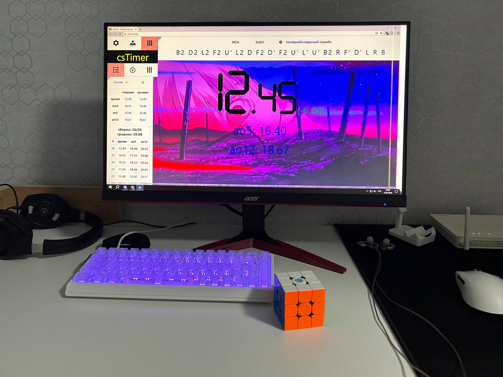
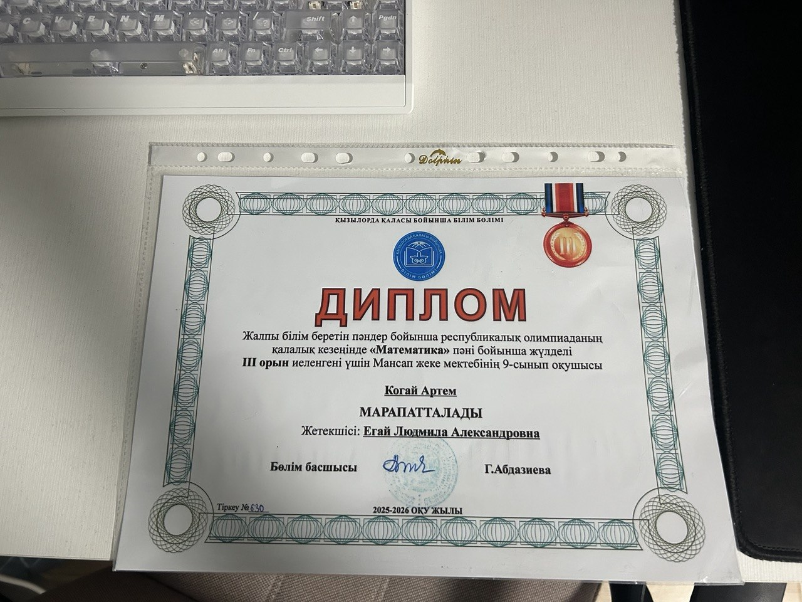

my portfolio
I'm Artem, I'm 15 years old, and I'm a beginner frontend developer.
My hobby is speedcubing. I started speedcubing in late December 2019, and in early 2020, I solved my first Rubik's Cube using Evgeny Bondarenko's tutorials. I'd been solving it for about a year using the beginner's method. Now I've almost completely mastered the CFOP method and average 20 seconds to solve a Rubik's Cube. I'm currently working on completing the CFOP method to achieve an average time of 9-10 seconds.
Also I have participated in 1 official competition in speedcubing. At the moment my best solve is 12.45, and ao5 is 16.40

In the fall of 2025, I attended the city mathematics olympiad for the first time, which took place in mid-December 2025. I was able to take 3rd place, which gave me a boost of motivation. In 2026, I will try to advance to the city stage and take 1st place to advance to the regional stage.
